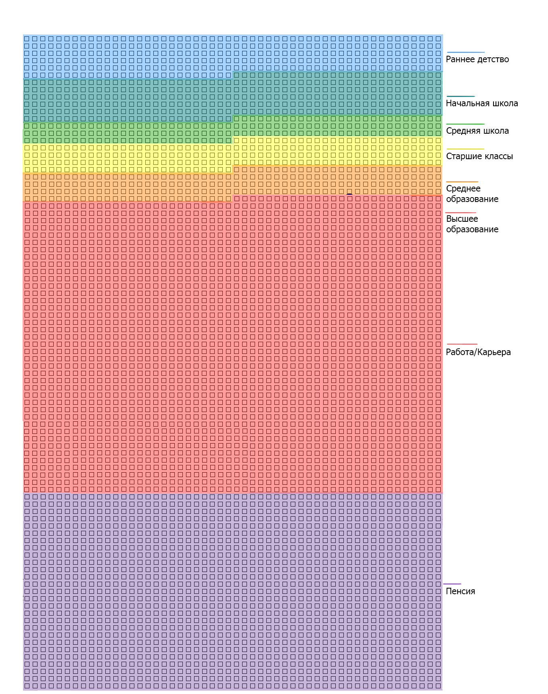

Что это такое?
- Календарь жизни в неделях -
- один из лучших способов посмотреть на нашу жизнь с другой стороны.
Мы склонны переоценивать значимость средних промежутков времени (месяц, год) и недооценивать краткие (четверть часа, час, день, неделя) и длительные (3-5-7 и более лет). Мы хотим всего и сразу, быстро, поэтому многие люди строят планы на месяц и год. Мыслить, планировать на 5-10 лет вперёд у многих не хватает мужества, терпения и дисциплины.
Ни одну большую цель нельзя достигнуть за 1 год. Чтобы получить среднее общее образование, нужно 11 лет. Чтобы получить профессиональное образование, нужно 2-7 лет. Чтобы вырастить ребёнка, нужно 20 лет. Чтобы создать успешную, стабильную компанию нужно 3 года и более.
Если мы не планируем на несколько лет, то значимость кратких промежутков тоже снижается. Если я буду учить английский язык 15 минут в день, то за 1 год я его не выучу. А если я буду посвящать этому 15 минут в течение 10 лет?
Календарь жизни в неделях помогает вырваться из этой ловушки 1 года за счёт визуального представления всей жизни на 1-2 страницах. Мы одновременно видим всю свою жизнь, что позволяет легче планировать на несколько лет. Ячейками жизни являются недели, что позволяет повысить значимость этого краткого промежутка времени в наших глазах.
Eсли представить, что при наличии хорошей медецины, человек проживет 90 лет, то его жизнь можно представить в виде 90 квадратов, которые описывают каждый год. Всего-то 90 квадратов. Но как говорилась раньше один год слишком много для того, чтобы здраво оценить какие-либо достижения или вспомнить сразу же все моменты, которые происходили с нами, поэтому вернемся к неделям.
Итак, хватит разговоров, переходим к календарю:

Складывается такое чувство, что наша жизнь состоит из бесчисленного количества недель. Но вот эти недели, прямо перед вашими глазами, и они вполне поддаются исчислению.
А сейчас давайте взглянем на то, как типичный американец проводит эти недели:
Жизнь типичного американца

Иногда жизнь кажется невероятно короткой. В другие моменты — до невозможного длинной. Но данная схема помогает сфокусировать внимание на том, что в любом случае жизнь ограничена во времени. Ваши недели — это всё, что у вас есть. Учитывая этот факт, единственное слово, подходящее для описания ваших недель, — драгоценные. Триллионы и триллионы недель составляют бесконечность, но те, что отведены вам — крохотная пригоршня.